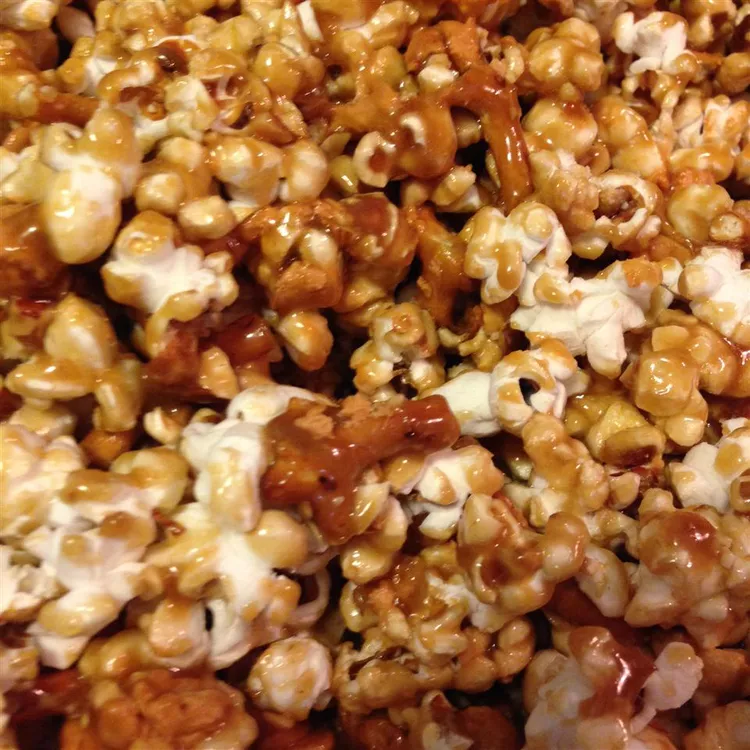

Caramel Pretzel Popcorn

What is the Caramel Pretzel Popcorn?
Caramel pretzel nut popcorn is a sweet and salty snack that combines the crunchy textures and flavors of popcorn, pretzels, and nuts with the rich, buttery taste of caramel. Generally, this treat is made by first preparing popcorn and then mixing in pretzel pieces and nuts, such as almonds, peanuts, or pecans. The mixture is then coated with a homemade or store-bought caramel sauce, which typically consists of butter, brown sugar, and corn syrup that's cooked until it's thick and golden.
Once the popcorn, pretzels, and nuts are thoroughly coated in the caramel, the mix is usually baked in the oven for a short period. This baking step helps the caramel set and gives the snack a delightful crunch. After baking, the caramel pretzel nut popcorn is cooled and broken into bite-sized pieces. This snack is popular for its combination of flavors and textures: the sweet caramel, the salty pretzels and nuts, and the satisfying crunch of the popcorn. It's often enjoyed at parties, movie nights, or as a special treat.
Ingridients:
- 8 cups broken salted pretzels
- 20 cups popped popcorn
- 4 cups dry roasted peanuts
- 3 cups brown sugar
- ¾ cup light corn syrup
- 1 ½ cups butter
- 1 teaspoon salt
- 1 teaspoon baking soda
- 2 teaspoons vanilla extract
How to do it:
- Place the pretzels, popcorn and peanuts into a large paper bag or, if you have one, a very large bowl. Set aside.
- In a saucepan over medium heat, combine the brown sugar, corn syrup, and butter. Cook, stirring to melt the butter and dissolve the sugar, until the mixture comes to a boil. Once the mixture is at a full boil, continue to cook for 5 minutes, stirring constantly.
- Remove from the heat, and stir in the salt, vanilla, and baking soda. The mixture will foam up when you add the soda, so use a long spoon to stir. Immediately pour the sugar mixture over the popcorn and pretzels in the bag. Shake until evenly coated. For a crispier treat, boil the sugar mixture longer, or bake the finished mix in the oven at 350 degrees F (175 degrees C) for about 10 minutes.